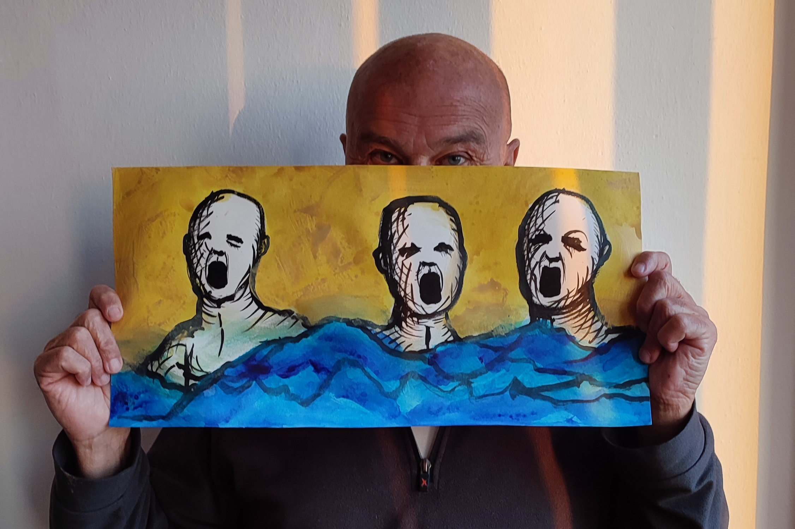

Immagini, figure, simboli.
Uno spazio dedicato alle opere e alla ricerca artistica.
«Nel profondo, l'atto del dipingere non deve forse sempre affrontare, comprendere una catastrofe, anche quando ciò che viene rappresentato non è una catastrofe?»
— Gilles Deleuze

La ricerca pittorica di Pierangelo Rosati si sviluppa attorno alla figura umana, intesa non tanto come rappresentazione del corpo, quanto come luogo di tensione fra identità individuale e carattere universale dell'esistenza, diventando così un territorio di trasformazione, nel quale affiorano dimensioni psichiche e simboliche.
Un ruolo centrale è assunto dalla bocca spalancata, elemento ricorrente che trascende la semplice espressione del grido. Essa si configura come una soglia fra interiorità ed esteriorità, un'apertura attraverso la quale l'essere umano sembra tentare un contatto con l'altro da sé o l'universo stesso, esponendo la propria intimità a una dimensione che non può interamente comprendere né contenere.
La cavità orale acquista così una valenza simbolica profonda: deposito dell'anima, luogo oscuro nel quale si sedimentano memorie, emozioni, paure e desideri prima di trovare una forma esprimibile. Da questo spazio originario qualcosa cerca di emergere, non necessariamente per tradursi in parola, ma per manifestarsi come presenza, energia, invocazione o grido. La bocca diviene il punto in cui l'esperienza individuale si dischiude all'universale e il confine fra il sé e ciò che lo circonda si fa incerto e permeabile.
Questa ricerca si alimenta di un immaginario arcaico e mitologico, evocato più che illustrato. Le figure e i segni sembrano richiamare un patrimonio simbolico remoto, nel quale il corpo può assumere valenze rituali e visionarie e l'esistenza si confronta con il mistero dell'origine, con le forze elementari della natura e con ciò che sfugge alla comprensione razionale. Il mito non si presenta necessariamente come racconto riconoscibile, ma come una presenza sotterranea, una matrice di immagini che la pittura rielabora liberamente.
In questa prospettiva, il riferimento all'archetipo e all'inconscio collettivo suggerisce la possibilità che le immagini individuali attingano a forme simboliche condivise, sedimentate nella memoria culturale e psichica dell'umanità. Il gesto pittorico assume talvolta la qualità di un rito: non la riproduzione di una cerimonia codificata, ma un atto di evocazione e trasformazione, attraverso il quale figure e segni sembrano affiorare da una dimensione anteriore alla parola e alla coscienza razionale.
La figura umana diventa allora un tramite fra il vissuto personale e una realtà più vasta, fra la profondità psichica e l'orizzonte cosmico. La pittura non offre risposte definitive né assegna ai simboli un significato univoco. Ne mantiene aperta l'ambiguità, lasciando che in essi convivano inquietudine e stupore, fragilità e potenza, appartenenza al mondo e desiderio di oltrepassarne i confini.